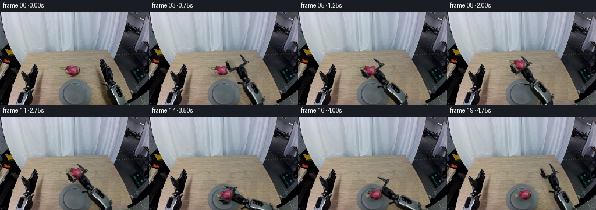
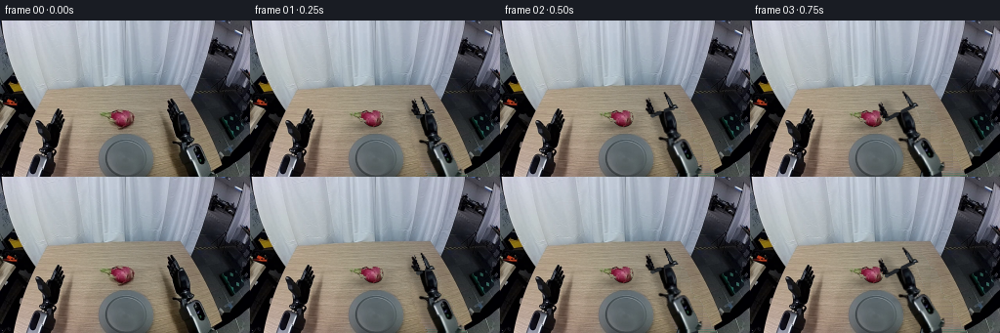
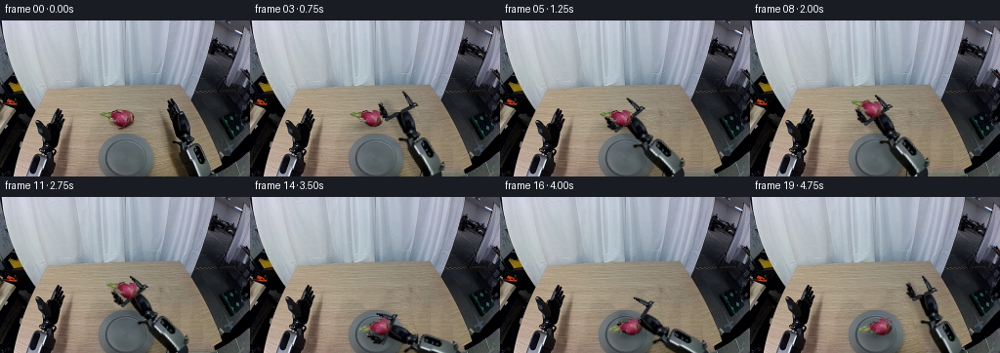

CODING AGENTS AS PIXEL WORLD MODELS
traex/GPT-6.1-Sol · common50_0041
点击播放 · 原生 RGB 像素
逐轮保存的候选
回放视频、检查图与代码变化。
每份候选均可单独播放。实际图片检查记录在下方工具轨迹中。
候选 01播放与检查图
点击播放 · 原生 RGB 像素


展开代码变化
--- 上一保存版本
+++ 本次保存版本
@@ -0,0 +1,275 @@
+from pathlib import Path
+import math
+import numpy as np
+from PIL import Image, ImageDraw
+from scipy.ndimage import gaussian_filter, binary_fill_holes, map_coordinates
+import artifact_io
+
+ROOT = Path(__file__).resolve().parent
+H, W = 160, 256
+S = 4
+
+def polygon(points, shape=(H,W), scale=4):
+ h,w=shape
+ im=Image.new('L',(w*scale,h*scale),0)
+ ImageDraw.Draw(im).polygon([(round(x*scale),round(y*scale)) for x,y in points],fill=255)
+ return np.asarray(im.resize((w,h),Image.Resampling.LANCZOS)).astype(float)/255
+
+def composite(dst, src, alpha):
+ return dst*(1-alpha[...,None])+src*alpha[...,None]
+
+def rigid_warp(rgb, alpha, anchor, position, angle, outshape=(H,W)):
+ yy,xx=np.indices(outshape,dtype=float)
+ co,si=np.cos(angle),np.sin(angle)
+ dx,dy=xx-position[0], yy-position[1]
+ sx=co*dx+si*dy+anchor[0]
+ sy=-si*dx+co*dy+anchor[1]
+ a=map_coordinates(alpha,[sy,sx],order=1,mode='constant',cval=0,prefilter=False)
+ # Interpolating premultiplied pixels prevents colored background outlines.
+ out=np.zeros((*outshape,3),dtype=float)
+ for k in range(3):
+ p=map_coordinates(rgb[...,k]*alpha,[sy,sx],order=1,mode='constant',cval=0,prefilter=False)
+ out[...,k]=p/np.maximum(a,1e-8)
+ return out,a
+
+def capsule_layer(shape, p, q, width, col, light=True):
+ yy,xx=np.indices(shape,dtype=float)
+ p,q=np.asarray(p),np.asarray(q)
+ d=q-p
+ length=np.linalg.norm(d)
+ u=d/length
+ t=(xx-p[0])*u[0]+(yy-p[1])*u[1]
+ v=-(xx-p[0])*u[1]+(yy-p[1])*u[0]
+ dist=np.sqrt(v*v+np.maximum(0,-t)**2+np.maximum(0,t-length)**2)
+ a=np.clip(width/2+.6-dist,0,1)
+ rgb=np.empty((*shape,3),float)
+ rgb[:]=col
+ if light:
+ shade=4*np.sqrt(np.maximum(0,1-(v/(width/2))**2))
+ shade+=3*np.exp(-((v+width*.2)/(width*.1+1))**2)
+ rgb+=shade[...,None]
+ return rgb,a
+
+def make_background(im):
+ """Reconstruct only revealed tabletop from its own scan-line texture."""
+ yy,xx=np.indices((H,W))
+ predicted=im.copy().astype(float)
+ for y in range(68,H):
+ # All samples come from visible unoccupied wood on the same scan line.
+ samples=list(range(77,103))
+ if y<91: samples+=list(range(141,171))
+ elif y<104: samples+=list(range(140,166))
+ elif y<116: samples+=list(range(140,161))
+ if y>=108:
+ edge=min(225,int(193+(y-80)*.46))
+ left=max(200,int(194+(y-110)*.34))
+ if edge>left: samples+=list(range(left,edge))
+ samples=np.asarray(samples)
+ vals=im[y,samples].astype(float)
+ good=(vals[:,0]-vals[:,2]>20)&(vals[:,0]>125)&(vals[:,1]>100)
+ samples=samples[good];vals=vals[good]
+ if len(samples)<8:
+ samples=np.arange(78,99);vals=im[y,samples].astype(float)
+ # Robust fit of illumination across the tabletop, separately in RGB.
+ A=np.c_[np.ones(len(samples)), samples-100]
+ coef=np.linalg.lstsq(A,vals,rcond=None)[0]
+ for _ in range(3):
+ resid=vals-A@coef
+ weights=np.minimum(1,8/(np.linalg.norm(resid,axis=1)+1e-6))
+ coef=np.linalg.lstsq(A*weights[:,None],vals*weights[:,None],rcond=None)[0]
+ coef[1]=np.clip(coef[1],[-.48,-.45,-.40],[-.11,-.08,-.055])
+ target=np.c_[np.ones(W),np.arange(W)-100]@coef
+ source_x=78+(np.arange(W)-162)%23
+ source_color=im[y,source_x]
+ model_source=np.c_[np.ones(W),source_x-100]@coef
+ noise=source_color-model_source
+ predicted[y]=np.clip(target+np.clip(noise,-9,9)*.85,0,255)
+ return predicted
+
+def generate():
+ im=np.asarray(Image.open(ROOT/'first_frame.png').convert('RGB')).astype(float)
+ yy,xx=np.indices((H,W))
+ r,g,b=im.transpose(2,0,1)
+ table=make_background(im)
+ # A polygon surrounds just the moving right-hand robot, not the other arm.
+ outline=[(174,79),(177,80),(180,84),(181,87),(184,90),(184,92),
+ (188,94),(191,97),(193,101),(196,108),(197,116),(196,119),
+ (199,122),(198,125),(203,126),(207,131),(209,137),(211,142),
+ (214,146),(217,148),(219,153),(219,159),(197,163),(192,153),
+ (188,145),(184,135),(182,128),(176,126),(175,123),(179,122),
+ (184,123),(185,121),(182,118),(181,114),(179,109),(177,102),
+ (175,98),(173,94),(171,92),(172,87),(171,84),(171,82)]
+ envelope=polygon(outline)
+ chroma=np.clip((28-(r-b))/23,0,1)
+ dark=np.clip((65-np.maximum.reduce([r,g,b]))/25,0,1)
+ alpha=envelope*np.maximum(chroma,dark)
+ fill=binary_fill_holes(alpha>.45)
+ alpha=np.maximum(alpha,fill.astype(float)*envelope)
+ # Remove the small brown anti-alias admixture from boundary pixels.
+ arm_rgb=im.copy()
+ partial=(alpha>0.03)&(alpha<.99)
+ recovered=(im-(1-alpha[...,None])*table)/np.maximum(alpha[...,None],.15)
+ arm_rgb[partial]=np.clip(recovered[partial],0,255)
+
+ # Forearm continues to its out-of-frame elbow without a stretchy endpoint.
+ AH=174
+ arm=np.zeros((AH,W,3),float);am=np.zeros((AH,W),float)
+ arm[:H]=arm_rgb;am[:H]=alpha
+ for y in range(H,169):
+ shift=round((y-159)*.28)
+ arm[y]=np.roll(arm_rgb[159],shift,axis=0)
+ am[y]=np.roll(alpha[159],shift)
+ # End it on a fixed joint plane at the elbow.
+ yya,xxa=np.indices((AH,W))
+ G0=np.array([177.5,88.5]);E0=np.array([204.,165.]);B=np.array([160.,263.])
+ direction=(E0-G0)/np.linalg.norm(E0-G0)
+ along=(xxa-E0[0])*direction[0]+(yya-E0[1])*direction[1]
+ am*=np.clip(1-along,0,1)
+ # Each parallel jaw is its own rigid part. Small knuckle links bridge it to
+ # the fixed palm when opened; the forearm geometry is never rescaled.
+ finger_zone=(yya<97)
+ lateral=(xxa-G0[0])*direction[1]-(yya-G0[1])*direction[0]
+ jaw_l=am*finger_zone*(lateral<0)
+ jaw_r=am*finger_zone*(lateral>=0)
+ body_mask=am*(~finger_zone)
+ normal=np.array([direction[1],-direction[0]])
+
+ # Extract the original textured fruit, including the protruding green scales.
+ fruit_outline=[(118,91),(122,91),(125,91),(129,91),(133,92),(135,94),
+ (136,97),(136,101),(135,104),(134,106),(131,108),(127,109),
+ (122,108),(119,106),(117,104),(116,103),(114,104),(112,102),
+ (113,100),(110,100),(108,99),(106,97),(106,96),(108,95),
+ (106,93),(110,93),(113,94),(115,94),(116,92)]
+ fm=polygon(fruit_outline)
+ # Background-colored scallops are transparent, while the pink skin and
+ # olive-green bracts retain the RGB values supplied in the first frame.
+ pink=np.clip(((r-g)-26)/15,0,1)*np.clip(((b-g)+3)/9,0,1)
+ green=np.clip(((g-b)-25)/10,0,1)*np.clip((g-r+20)/15,0,1)
+ local_dark=np.clip((125-r)/35,0,1)
+ fm*=np.maximum.reduce([pink,green,local_dark])
+ core=binary_fill_holes(fm>.45)
+ fm=np.maximum(fm,core.astype(float)*polygon(fruit_outline))
+ fruit=im.copy()
+ partial=(fm>.03)&(fm<.99)
+ rec=(im-(1-fm[...,None])*table)/np.maximum(fm[...,None],.2)
+ fruit[partial]=np.clip(rec[partial],0,255)
+ F0=np.array([123.5,99.5])
+
+ # Clear the original object, its tabletop contact shadow, and the robot's
+ # old shadow. Feathering preserves the table grain at the reveal edges.
+ fruit_clear=polygon([(105,90),(135,90),(139,95),(138,107),(132,113),
+ (118,114),(112,106),(105,102)])
+ fruit_clear=gaussian_filter(fruit_clear,.7)
+ region=polygon([(168,78),(183,80),(193,93),(199,107),(202,121),
+ (209,128),(214,144),(221,159),(177,163),(170,135),
+ (164,118),(161,101),(170,94)])
+ disparity=table[...,0]-r
+ clear_alpha=region*np.clip((disparity-5)/15,0,1)
+ clear_alpha=np.maximum(clear_alpha,alpha)
+ bg=composite(im,table,clear_alpha)
+ bg=composite(bg,table,fruit_clear)
+ Image.fromarray(np.uint8(np.clip(bg,0,255))).save(ROOT/'background_generated.png')
+ Image.fromarray(np.uint8(am[:H]*255)).save(ROOT/'arm_mask_generated.png')
+ Image.fromarray(np.uint8(fm*255)).save(ROOT/'fruit_mask_generated.png')
+
+ LU=np.linalg.norm(E0-B);LF=np.linalg.norm(E0-G0)
+ a0=math.atan2(G0[1]-E0[1],G0[0]-E0[0])
+ def ik(p):
+ v=p-B;d=np.linalg.norm(v);u=v/d
+ z=(LU*LU-LF*LF+d*d)/(2*d)
+ h=math.sqrt(max(0,LU*LU-z*z))
+ elbow=B+z*u+h*np.array([-u[1],u[0]])
+ angle=math.atan2(p[1]-elbow[1],p[0]-elbow[0])-a0
+ return elbow,angle
+ # Positions in the fixed camera projection. Slow close and slow release
+ # separate the lift and retreat from the actual contact event.
+ track=np.array([[177.5,88.5],[174.5,87.5],[163.,84.5],[149.,86.],
+ [135.,90.],[125.,95.],[123.5,99.5],[123.5,99.5],
+ [124.,90.],[125.5,83.],[128.,85.],[130.,95.],
+ [132.,108.],[133.,121.],[133.,133.],[133.,133.],
+ [136.,120.],[146.,105.],[165.,95.],[173.,92.]])
+ opening=[0,3,8,12,13,13,10.5,10.5,10.5,10.5,10.5,10.5,
+ 10.5,10.5,10.5,14,14,13,10,7]
+ angle_grasp=ik(track[6])[1]
+ fruit_final_angle=ik(track[14])[1]-angle_grasp
+ frames=[]
+ states=[]
+ for i, (pos,gap) in enumerate(zip(track,opening)):
+ elbow,angle=ik(pos)
+ co,si=math.cos(angle),math.sin(angle)
+ R=np.array([[co,-si],[si,co]])
+ def transform(pt):return pos+R@(np.asarray(pt)-G0)
+ if i<=7:
+ fpos=F0.copy();fa=0.;height=0.
+ elif i<=14:
+ fpos=pos.copy();fa=angle-angle_grasp
+ # Height in projected pixels; the tabletop position travels to the plate.
+ if i==8:height=10
+ elif i==9:height=19
+ elif i==10:height=22
+ elif i==11:height=25
+ elif i==12:height=21
+ elif i==13:height=11
+ else:height=0
+ else:
+ fpos=track[14].copy();fa=fruit_final_angle;height=0.
+ frame=bg.copy()
+
+ # Gripper/forearm cast shadows remain soft while hovering, and sharpen
+ # at the plate. Shadows are overlays, so no plate pixels are relocated.
+ _, robot_shape=rigid_warp(arm,am,G0,pos,angle)
+ oldshape=map_coordinates(robot_shape,[yy-4,xx+7],order=1,mode='constant',cval=0,prefilter=False)
+ shadow=gaussian_filter(oldshape,2.1)
+ # Restrict to the tabletop, and avoid shading the fixed distant room.
+ top=67
+ edge=193+(yy-80)*.46
+ ontable=(yy>top)&(xx<edge)&(xx>57-(yy-100)*.31)
+ frame*=1-(shadow*.20*ontable)[...,None]
+
+ # Fruit contact shadow, cast to the lower left; no floating fruit at rest.
+ fx,fy=fpos
+ shx=fx-2;shy=fy+8+height*.72
+ rx=10+height*.20;ry=4+height*.09
+ fruit_shadow=np.exp(-((xx-shx)**2/(2*rx*rx)+(yy-shy)**2/(2*ry*ry)))
+ opacity=.34 if height<1 else .16
+ frame*=1-(fruit_shadow*opacity*ontable)[...,None]
+
+ # The upper link rotates at an off-screen fixed shoulder. This newly
+ # revealed region is a shaded rigid cylinder, not a warped rubber arm.
+ link,la=capsule_layer((H,W),elbow,B,22,(21,25,29))
+ vv=B-elbow;vv/=np.linalg.norm(vv);nn=np.array([-vv[1],vv[0]])
+ # Metallic side panel and its narrow specular edge.
+ panel,pa=capsule_layer((H,W),elbow+nn*5,B+nn*5,10,(87,97,100))
+ stripe,sa=capsule_layer((H,W),elbow+nn*1,B+nn*1,2,(183,197,202),False)
+ link=composite(link,panel,pa);link=composite(link,stripe,sa)
+ frame=composite(frame,link,la)
+
+ body,ba=rigid_warp(arm,body_mask,G0,pos,angle)
+ frame=composite(frame,body,ba)
+ # Knuckle links between the palm and the separate sliding jaw bases.
+ for sign in [-1,1]:
+ base=G0+direction*9+normal*sign*3
+ other=base+normal*sign*gap
+ a,bp=transform(base),transform(other)
+ rgb,aa=capsule_layer((H,W),a,bp,3.5,(28,31,35))
+ frame=composite(frame,rgb,aa)
+ rgb,aa=capsule_layer((H,W),bp,bp+R@direction*.1,4,(44,48,50))
+ frame=composite(frame,rgb,aa)
+ # Far finger, then fruit, then the near finger: correct grasp occlusion.
+ left,al=rigid_warp(arm,jaw_l,G0,pos-R@normal*gap,angle)
+ right,ar=rigid_warp(arm,jaw_r,G0,pos+R@normal*gap,angle)
+ frame=composite(frame,left,al)
+ obj,oa=rigid_warp(fruit,fm,F0,fpos,fa)
+ frame=composite(frame,obj,oa)
+ frame=composite(frame,right,ar)
+ if i==0:frame=im.copy()
+ frames.append(np.uint8(np.clip(np.rint(frame),0,255)))
+ states.append([i,*pos,*elbow,angle,*fpos,fa,gap])
+ frames=np.stack(frames)
+ np.save(ROOT/'motion_states.npy',np.asarray(states))
+ np.save(ROOT/'candidate_frames.npy',frames)
+ artifact_io.save(frames, ROOT)
+ print('Saved',frames.shape,'RGB frames; first frame identical:',np.array_equal(frames[0],im.astype(np.uint8)))
+
+if __name__=='__main__':
+ generate()
候选 02播放与检查图
点击播放 · 原生 RGB 像素

展开代码变化
--- 上一保存版本
+++ 本次保存版本
@@ -37,7 +37,7 @@
p,q=np.asarray(p),np.asarray(q)
d=q-p
length=np.linalg.norm(d)
- u=d/length
+ u=d/max(length,1e-8) if length>1e-8 else np.array([1.,0.])
t=(xx-p[0])*u[0]+(yy-p[1])*u[1]
v=-(xx-p[0])*u[1]+(yy-p[1])*u[0]
dist=np.sqrt(v*v+np.maximum(0,-t)**2+np.maximum(0,t-length)**2)
@@ -138,8 +138,8 @@
fruit_outline=[(118,91),(122,91),(125,91),(129,91),(133,92),(135,94),
(136,97),(136,101),(135,104),(134,106),(131,108),(127,109),
(122,108),(119,106),(117,104),(116,103),(114,104),(112,102),
- (113,100),(110,100),(108,99),(106,97),(106,96),(108,95),
- (106,93),(110,93),(113,94),(115,94),(116,92)]
+ (113,100),(110,100),(108,99),(104,98),(102,96),(102,94),
+ (105,92),(109,92),(113,94),(115,94),(116,92)]
fm=polygon(fruit_outline)
# Background-colored scallops are transparent, while the pink skin and
# olive-green bracts retain the RGB values supplied in the first frame.
@@ -157,9 +157,9 @@
# Clear the original object, its tabletop contact shadow, and the robot's
# old shadow. Feathering preserves the table grain at the reveal edges.
- fruit_clear=polygon([(105,90),(135,90),(139,95),(138,107),(132,113),
- (118,114),(112,106),(105,102)])
- fruit_clear=gaussian_filter(fruit_clear,.7)
+ fruit_clear=polygon([(100,90),(136,89),(140,95),(140,107),(133,114),
+ (118,115),(111,107),(100,103)])
+ fruit_clear=np.maximum(gaussian_filter(fruit_clear,.7),fm)
region=polygon([(168,78),(183,80),(193,93),(199,107),(202,121),
(209,128),(214,144),(221,159),(177,163),(170,135),
(164,118),(161,101),(170,94)])
可观测工具轨迹
实际执行的命令与返回图片。
命令 1exit 0
/bin/bash -lc 'ls -la; cat prompt.txt; cat GENERATION_RULES.md'
命令 2exit 0
/bin/bash -lc "cat task_spec.json; cat artifact_io.py; python - <<'PY'
from PIL import Image
import numpy as np
im=np.array(Image.open('first_frame.png').convert('RGB'))
print(im.shape)
# Color ASCII, 128 x 80
im=np.array(Image.fromarray(im).resize((128,80)))
for y in range(80):
s=''
for x in range(128):
r,g,b=map(int,im[y,x]); v=(r+g+b)/3
if r>g*1.3 and r>b*1.15: c='R' if r>140 else 'r'
elif r>b*1.22 and g>b*1.15 and r>g*1.12: c='O'
elif b>r*1.18 and b>g*1.07:c='B'
elif g>r*1.15 and g>b*1.1:c='G'
elif r>g*1.18 and b>g*1.1:c='P'
else:c=' .:-=+*#%@'[min(9,int(v/256*10))]
s+=c
print(f'{y*2:03} {s}')
PY"命令 3exit 0
/bin/bash -lc "python - <<'PY'
import numpy as np
from PIL import Image
im=np.array(Image.open('first_frame.png'))
# coarse numeric palette: cluster pixels via iterative vector quantization
x=im.reshape(-1,3).astype(float); rng=np.random.default_rng(0); c=x[rng.choice(len(x),18,False)]
for _ in range(30):
d=((x[:,None,:]-c[None,:,:])**2).sum(2); l=d.argmin(1)
for k in range(len(c)):
if (l==k).any():c[k]=x[l==k].mean(0)
order=np.argsort(c.mean(1));c=c[order]
l=(((x[:,None,:]-c[None,:,:])**2).sum(2)).argmin(1).reshape(160,256)
chars='0123456789ABCDEFGH'
for i,v in enumerate(c):
ys,xs=np.where(l==i);print(chars[i],np.round(v).astype(int),len(ys),'bbox',xs.min(),ys.min(),xs.max(),ys.max())
for y in range(65,160,2):
print(f'{y:3}', ''.join(chars[l[y,x]] for x in range(0,256,2)))
print('fruit region')
for y in range(85,113):
print(f'{y:3}', ''.join(chars[l[y,x]] for x in range(105,140)))
np.save('palette.npy',c)
np.save('labels.npy',l)
PY"命令 4exit 0
/bin/bash -lc "python - <<'PY'
import numpy as np
from PIL import Image
im=np.array(Image.open('first_frame.png'));r,g,b=im.transpose(2,0,1).astype(float)
for y in range(88,114):
print(y,' '.join(f'{x}:{tuple(im[y,x])}' for x in range(111,140,3)))
print('right arm')
for y in range(78,160,3):
print(y,' '.join(f'{x}:{tuple(im[y,x])}' for x in range(166,207,4)))
print('left arm')
for y in range(87,160,4):
print(y,' '.join(f'{x}:{tuple(im[y,x])}' for x in range(31,70,4)))
PY"命令 5exit 0
/bin/bash -lc "python - <<'PY'
import numpy as np
from PIL import Image
im=np.array(Image.open('first_frame.png')); l=np.load('labels.npy'); c=np.load('palette.npy');ch='0123456789ABCDEFGH'
print('RIGHT x=160..215')
print(' '+''.join(str(x//10%10) for x in range(160,216)))
print(' '+''.join(str(x%10) for x in range(160,216)))
for y in range(76,160):
print(f'{y:3} '+''.join(ch[l[y,x]] for x in range(160,216)))
print('fruit full res - r=magenta, s=green bract, .=wood, _=shadow')
r,g,b=im.transpose(2,0,1).astype(float)
for y in range(88,114):
print(f'{y:3} '+''.join('P' if r[y,x]-g[y,x]>35 and b[y,x]-g[y,x]>2 else 's' if g[y,x]>b[y,x]+28 and g[y,x]>=r[y,x]-12 else '_' if r[y,x]<110 else '.' for x in range(106,142)))
PY"命令 6exit 0
/bin/bash -lc "python - <<'PY'
import numpy as np
from PIL import Image
im=np.array(Image.open('first_frame.png')); r,g,b=im.astype(float).transpose(2,0,1)
# print dark/cool arm pixels plus table shadow in full detail
print('RIGHT characters @ light metal, # dark, + steel, . shadow, blank wood')
print(' '+''.join(str(x//10%10) for x in range(160,216)))
print(' '+''.join(str(x%10) for x in range(160,216)))
for y in range(78,160):
s=''
for x in range(160,216):
if b[y,x]>=r[y,x]-3 and r[y,x]<60:ch='#'
elif b[y,x]>=r[y,x]-8:ch='@' if r[y,x]>140 else '+'
elif r[y,x]<115:ch='.'
else:ch=' '
s+=ch
print(f'{y:3} {s}')
PY"命令 7exit 0
/bin/bash -lc "python - <<'PY'
from PIL import Image
import numpy as np
im=np.array(Image.open('first_frame.png')).astype(int)
for y in [119,125,130,140,145,150,155,159]:
print(y,' '.join(f'{x}:{tuple(im[y,x])}' for x in range(206,256,2)))
# gripper region full palette, x170..200 y78..128
print('gripper warmblank #black +=metal, _ shadow')
for y in range(78,129):
s=''
for x in range(169,201):
r,g,b=im[y,x];s+= '#' if max(r,g,b)<50 else '+' if b>r-7 else '_' if r<110 else ' '
print(f'{y:3} {s}')
PY"命令 8exit 0
/bin/bash -lc "python - <<'PY' import importlib.util for s in ['scipy','cv2']: print(s,importlib.util.find_spec(s)) PY"
命令 9exit 0
/bin/bash -lc "python - <<'PY' import numpy as np,math B=np.array([160.,263.]); E=np.array([204.,165.]);P=np.array([180.,92.]); L=np.linalg.norm(E-B);D=np.linalg.norm(P-E) def ik(p): v=np.array(p)-B; d=np.linalg.norm(v);u=v/d;a=(L*L-D*D+d*d)/(2*d);h=math.sqrt(max(0,L*L-a*a));n=np.array([-u[1],u[0]]);return B+a*u+h*n,B+a*u-h*n print(L,D,ik(P)) for p in [[125,96],[125,83],[129,110],[131,129],[171,102]]: for e in ik(p)[:1]: ang=math.atan2(p[1]-e[1],p[0]-e[0])-math.atan2(P[1]-E[1],P[0]-E[0]);print(p,'elbow',e,'angle',math.degrees(ang)) PY"
命令 10exit 0
/bin/bash -lc "cat > generate.py <<'PY'
from pathlib import Path
import math
import numpy as np
from PIL import Image, ImageDraw
from scipy.ndimage import gaussian_filter, binary_fill_holes, map_coordinates
import artifact_io
ROOT = Path(__file__).resolve().parent
H, W = 160, 256
S = 4
def polygon(points, shape=(H,W), scale=4):
h,w=shape
im=Image.new('L',(w*scale,h*scale),0)
ImageDraw.Draw(im).polygon([(round(x*scale),round(y*scale)) for x,y in points],fill=255)
return np.asarray(im.resize((w,h),Image.Resampling.LANCZOS)).astype(float)/255
def composite(dst, src, alpha):
return dst*(1-alpha[...,None])+src*alpha[...,None]
def rigid_warp(rgb, alpha, anchor, position, angle, outshape=(H,W)):
yy,xx=np.indices(outshape,dtype=float)
co,si=np.cos(angle),np.sin(angle)
dx,dy=xx-position[0], yy-position[1]
sx=co*dx+si*dy+anchor[0]
sy=-si*dx+co*dy+anchor[1]
a=map_coordinates(alpha,[sy,sx],order=1,mode='constant',cval=0,prefilter=False)
# Interpolating premultiplied pixels prevents colored background outlines.
out=np.zeros((*outshape,3),dtype=float)
for k in range(3):
p=map_coordinates(rgb[...,k]*alpha,[sy,sx],order=1,mode='constant',cval=0,prefilter=False)
out[...,k]=p/np.maximum(a,1e-8)
return out,a
def capsule_layer(shape, p, q, width, col, light=True):
yy,xx=np.indices(shape,dtype=float)
p,q=np.asarray(p),np.asarray(q)
d=q-p
length=np.linalg.norm(d)
u=d/length
t=(xx-p[0])*u[0]+(yy-p[1])*u[1]
v=-(xx-p[0])*u[1]+(yy-p[1])*u[0]
dist=np.sqrt(v*v+np.maximum(0,-t)**2+np.maximum(0,t-length)**2)
a=np.clip(width/2+.6-dist,0,1)
rgb=np.empty((*shape,3),float)
rgb[:]=col
if light:
shade=4*np.sqrt(np.maximum(0,1-(v/(width/2))**2))
shade+=3*np.exp(-((v+width*.2)/(width*.1+1))**2)
rgb+=shade[...,None]
return rgb,a
def make_background(im):
\"\"\"Reconstruct only revealed tabletop from its own scan-line texture.\"\"\"
yy,xx=np.indices((H,W))
predicted=im.copy().astype(float)
for y in range(68,H):
# All samples come from visible unoccupied wood on the same scan line.
samples=list(range(77,103))
if y<91: samples+=list(range(141,171))
elif y<104: samples+=list(range(140,166))
elif y<116: samples+=list(range(140,161))
if y>=108:
edge=min(225,int(193+(y-80)*.46))
left=max(200,int(194+(y-110)*.34))
if edge>left: samples+=list(range(left,edge))
samples=np.asarray(samples)
vals=im[y,samples].astype(float)
good=(vals[:,0]-vals[:,2]>20)&(vals[:,0]>125)&(vals[:,1]>100)
samples=samples[good];vals=vals[good]
if len(samples)<8:
samples=np.arange(78,99);vals=im[y,samples].astype(float)
# Robust fit of illumination across the tabletop, separately in RGB.
A=np.c_[np.ones(len(samples)), samples-100]
coef=np.linalg.lstsq(A,vals,rcond=None)[0]
for _ in range(3):
resid=vals-A@coef
weights=np.minimum(1,8/(np.linalg.norm(resid,axis=1)+1e-6))
coef=np.linalg.lstsq(A*weights[:,None],vals*weights[:,None],rcond=None)[0]
coef[1]=np.clip(coef[1],[-.48,-.45,-.40],[-.11,-.08,-.055])
target=np.c_[np.ones(W),np.arange(W)-100]@coef
source_x=78+(np.arange(W)-162)%23
source_color=im[y,source_x]
model_source=np.c_[np.ones(W),source_x-100]@coef
noise=source_color-model_source
predicted[y]=np.clip(target+np.clip(noise,-9,9)*.85,0,255)
return predicted
def generate():
im=np.asarray(Image.open(ROOT/'first_frame.png').convert('RGB')).astype(float)
yy,xx=np.indices((H,W))
r,g,b=im.transpose(2,0,1)
table=make_background(im)
# A polygon surrounds just the moving right-hand robot, not the other arm.
outline=[(174,79),(177,80),(180,84),(181,87),(184,90),(184,92),
(188,94),(191,97),(193,101),(196,108),(197,116),(196,119),
(199,122),(198,125),(203,126),(207,131),(209,137),(211,142),
(214,146),(217,148),(219,153),(219,159),(197,163),(192,153),
(188,145),(184,135),(182,128),(176,126),(175,123),(179,122),
(184,123),(185,121),(182,118),(181,114),(179,109),(177,102),
(175,98),(173,94),(171,92),(172,87),(171,84),(171,82)]
envelope=polygon(outline)
chroma=np.clip((28-(r-b))/23,0,1)
dark=np.clip((65-np.maximum.reduce([r,g,b]))/25,0,1)
alpha=envelope*np.maximum(chroma,dark)
fill=binary_fill_holes(alpha>.45)
alpha=np.maximum(alpha,fill.astype(float)*envelope)
# Remove the small brown anti-alias admixture from boundary pixels.
arm_rgb=im.copy()
partial=(alpha>0.03)&(alpha<.99)
recovered=(im-(1-alpha[...,None])*table)/np.maximum(alpha[...,None],.15)
arm_rgb[partial]=np.clip(recovered[partial],0,255)
# Forearm continues to its out-of-frame elbow without a stretchy endpoint.
AH=174
arm=np.zeros((AH,W,3),float);am=np.zeros((AH,W),float)
arm[:H]=arm_rgb;am[:H]=alpha
for y in range(H,169):
shift=round((y-159)*.28)
arm[y]=np.roll(arm_rgb[159],shift,axis=0)
am[y]=np.roll(alpha[159],shift)
# End it on a fixed joint plane at the elbow.
yya,xxa=np.indices((AH,W))
G0=np.array([177.5,88.5]);E0=np.array([204.,165.]);B=np.array([160.,263.])
direction=(E0-G0)/np.linalg.norm(E0-G0)
along=(xxa-E0[0])*direction[0]+(yya-E0[1])*direction[1]
am*=np.clip(1-along,0,1)
# Each parallel jaw is its own rigid part. Small knuckle links bridge it to
# the fixed palm when opened; the forearm geometry is never rescaled.
finger_zone=(yya<97)
lateral=(xxa-G0[0])*direction[1]-(yya-G0[1])*direction[0]
jaw_l=am*finger_zone*(lateral<0)
jaw_r=am*finger_zone*(lateral>=0)
body_mask=am*(~finger_zone)
normal=np.array([direction[1],-direction[0]])
# Extract the original textured fruit, including the protruding green scales.
fruit_outline=[(118,91),(122,91),(125,91),(129,91),(133,92),(135,94),
(136,97),(136,101),(135,104),(134,106),(131,108),(127,109),
(122,108),(119,106),(117,104),(116,103),(114,104),(112,102),
(113,100),(110,100),(108,99),(106,97),(106,96),(108,95),
(106,93),(110,93),(113,94),(115,94),(116,92)]
fm=polygon(fruit_outline)
# Background-colored scallops are transparent, while the pink skin and
# olive-green bracts retain the RGB values supplied in the first frame.
pink=np.clip(((r-g)-26)/15,0,1)*np.clip(((b-g)+3)/9,0,1)
green=np.clip(((g-b)-25)/10,0,1)*np.clip((g-r+20)/15,0,1)
local_dark=np.clip((125-r)/35,0,1)
fm*=np.maximum.reduce([pink,green,local_dark])
core=binary_fill_holes(fm>.45)
fm=np.maximum(fm,core.astype(float)*polygon(fruit_outline))
fruit=im.copy()
partial=(fm>.03)&(fm<.99)
rec=(im-(1-fm[...,None])*table)/np.maximum(fm[...,None],.2)
fruit[partial]=np.clip(rec[partial],0,255)
F0=np.array([123.5,99.5])
# Clear the original object, its tabletop contact shadow, and the robot's
# old shadow. Feathering preserves the table grain at the reveal edges.
fruit_clear=polygon([(105,90),(135,90),(139,95),(138,107),(132,113),
(118,114),(112,106),(105,102)])
fruit_clear=gaussian_filter(fruit_clear,.7)
region=polygon([(168,78),(183,80),(193,93),(199,107),(202,121),
(209,128),(214,144),(221,159),(177,163),(170,135),
(164,118),(161,101),(170,94)])
disparity=table[...,0]-r
clear_alpha=region*np.clip((disparity-5)/15,0,1)
clear_alpha=np.maximum(clear_alpha,alpha)
bg=composite(im,table,clear_alpha)
bg=composite(bg,table,fruit_clear)
Image.fromarray(np.uint8(np.clip(bg,0,255))).save(ROOT/'background_generated.png')
Image.fromarray(np.uint8(am[:H]*255)).save(ROOT/'arm_mask_generated.png')
Image.fromarray(np.uint8(fm*255)).save(ROOT/'fruit_mask_generated.png')
LU=np.linalg.norm(E0-B);LF=np.linalg.norm(E0-G0)
a0=math.atan2(G0[1]-E0[1],G0[0]-E0[0])
def ik(p):
v=p-B;d=np.linalg.norm(v);u=v/d
z=(LU*LU-LF*LF+d*d)/(2*d)
h=math.sqrt(max(0,LU*LU-z*z))
elbow=B+z*u+h*np.array([-u[1],u[0]])
angle=math.atan2(p[1]-elbow[1],p[0]-elbow[0])-a0
return elbow,angle
# Positions in the fixed camera projection. Slow close and slow release
# separate the lift and retreat from the actual contact event.
track=np.array([[177.5,88.5],[174.5,87.5],[163.,84.5],[149.,86.],
[135.,90.],[125.,95.],[123.5,99.5],[123.5,99.5],
[124.,90.],[125.5,83.],[128.,85.],[130.,95.],
[132.,108.],[133.,121.],[133.,133.],[133.,133.],
[136.,120.],[146.,105.],[165.,95.],[173.,92.]])
opening=[0,3,8,12,13,13,10.5,10.5,10.5,10.5,10.5,10.5,
10.5,10.5,10.5,14,14,13,10,7]
angle_grasp=ik(track[6])[1]
fruit_final_angle=ik(track[14])[1]-angle_grasp
frames=[]
states=[]
for i, (pos,gap) in enumerate(zip(track,opening)):
elbow,angle=ik(pos)
co,si=math.cos(angle),math.sin(angle)
R=np.array([[co,-si],[si,co]])
def transform(pt):return pos+R@(np.asarray(pt)-G0)
if i<=7:
fpos=F0.copy();fa=0.;height=0.
elif i<=14:
fpos=pos.copy();fa=angle-angle_grasp
# Height in projected pixels; the tabletop position travels to the plate.
if i==8:height=10
elif i==9:height=19
elif i==10:height=22
elif i==11:height=25
elif i==12:height=21
elif i==13:height=11
else:height=0
else:
fpos=track[14].copy();fa=fruit_final_angle;height=0.
frame=bg.copy()
# Gripper/forearm cast shadows remain soft while hovering, and sharpen
# at the plate. Shadows are overlays, so no plate pixels are relocated.
_, robot_shape=rigid_warp(arm,am,G0,pos,angle)
oldshape=map_coordinates(robot_shape,[yy-4,xx+7],order=1,mode='constant',cval=0,prefilter=False)
shadow=gaussian_filter(oldshape,2.1)
# Restrict to the tabletop, and avoid shading the fixed distant room.
top=67
edge=193+(yy-80)*.46
ontable=(yy>top)&(xx<edge)&(xx>57-(yy-100)*.31)
frame*=1-(shadow*.20*ontable)[...,None]
# Fruit contact shadow, cast to the lower left; no floating fruit at rest.
fx,fy=fpos
shx=fx-2;shy=fy+8+height*.72
rx=10+height*.20;ry=4+height*.09
fruit_shadow=np.exp(-((xx-shx)**2/(2*rx*rx)+(yy-shy)**2/(2*ry*ry)))
opacity=.34 if height<1 else .16
frame*=1-(fruit_shadow*opacity*ontable)[...,None]
# The upper link rotates at an off-screen fixed shoulder. This newly
# revealed region is a shaded rigid cylinder, not a warped rubber arm.
link,la=capsule_layer((H,W),elbow,B,22,(21,25,29))
vv=B-elbow;vv/=np.linalg.norm(vv);nn=np.array([-vv[1],vv[0]])
# Metallic side panel and its narrow specular edge.
panel,pa=capsule_layer((H,W),elbow+nn*5,B+nn*5,10,(87,97,100))
stripe,sa=capsule_layer((H,W),elbow+nn*1,B+nn*1,2,(183,197,202),False)
link=composite(link,panel,pa);link=composite(link,stripe,sa)
frame=composite(frame,link,la)
body,ba=rigid_warp(arm,body_mask,G0,pos,angle)
frame=composite(frame,body,ba)
# Knuckle links between the palm and the separate sliding jaw bases.
for sign in [-1,1]:
base=G0+direction*9+normal*sign*3
other=base+normal*sign*gap
a,bp=transform(base),transform(other)
rgb,aa=capsule_layer((H,W),a,bp,3.5,(28,31,35))
frame=composite(frame,rgb,aa)
rgb,aa=capsule_layer((H,W),bp,bp+R@direction*.1,4,(44,48,50))
frame=composite(frame,rgb,aa)
# Far finger, then fruit, then the near finger: correct grasp occlusion.
left,al=rigid_warp(arm,jaw_l,G0,pos-R@normal*gap,angle)
right,ar=rigid_warp(arm,jaw_r,G0,pos+R@normal*gap,angle)
frame=composite(frame,left,al)
obj,oa=rigid_warp(fruit,fm,F0,fpos,fa)
frame=composite(frame,obj,oa)
frame=composite(frame,right,ar)
if i==0:frame=im.copy()
frames.append(np.uint8(np.clip(np.rint(frame),0,255)))
states.append([i,*pos,*elbow,angle,*fpos,fa,gap])
frames=np.stack(frames)
np.save(ROOT/'motion_states.npy',np.asarray(states))
np.save(ROOT/'candidate_frames.npy',frames)
artifact_io.save(frames, ROOT)
print('Saved',frames.shape,'RGB frames; first frame identical:',np.array_equal(frames[0],im.astype(np.uint8)))
if __name__=='__main__':
generate()
PY
python generate.py"命令 11exit 0
/bin/bash -lc "python - <<'PY'
import numpy as np
from PIL import Image
f=np.load('candidate_frames.npy').astype(float); im=f[0]
for i in [1,4,6,9,12,14,16,19]:
print('\\nFRAME',i)
fr=f[i];r,g,b=fr.transpose(2,0,1)
for y in range(72,160,2):
s=''
for x in range(65,217,2):
if (r[y,x]-g[y,x]>38) and (b[y,x]>g[y,x]):ch='P'
elif g[y,x]-b[y,x]>28 and g[y,x]>=r[y,x]-12:ch='s'
elif b[y,x]>=r[y,x]-9:
ch='@' if r[y,x]>140 else '+' if r[y,x]>55 else '#'
elif r[y,x]<110:ch='.'
else:ch=' '
s+=ch
print(f'{y:3} {s}')
print('mean frame difference', np.mean(abs(f[i]-f[max(0,i-1)])))
print('NaNs?',np.isnan(f).any())
print(np.load('motion_states.npy'))
PY"命令 12exit 0
/bin/bash -lc "python - <<'PY'
import numpy as np
from PIL import Image
im=np.array(Image.open('first_frame.png')).astype(float);am=np.asarray(Image.open('arm_mask_generated.png'))/255;fm=np.asarray(Image.open('fruit_mask_generated.png'))/255;bg=np.array(Image.open('background_generated.png')).astype(float);f=np.load('candidate_frames.npy').astype(float)
for y in range(88,114):
print(f'{y:3} '+''.join('M' if fm[y,x]>.8 else '+' if fm[y,x]>.3 else '.' if fm[y,x]>.03 else ' ' for x in range(102,142)))
print('background remaining fruit pixels')
for y in range(90,101):
print(y,[(x,im[y,x].astype(int).tolist(),bg[y,x].astype(int).tolist()) for x in range(104,113)])
print('frame1 arm original differences')
for y in range(148,160):
print(y,' '.join(f'{x}:{tuple(f[1,y,x].astype(int))}' for x in range(193,213,3)))
print('stable pixels error above y68',np.max(abs(f[:,0:68]-im[None,0:68])))
PY"命令 13exit 0
/bin/bash -lc "python - <<'PY'
from PIL import Image
import numpy as np
im=np.array(Image.open('first_frame.png'));r,g,b=im.astype(float).transpose(2,0,1)
for y in range(89,106):
s=''
for x in range(101,120):
if r[y,x]-g[y,x]>35 and b[y,x]>g[y,x]:ch='P'
elif g[y,x]-b[y,x]>28 and g[y,x]>r[y,x]-15:ch='s'
elif r[y,x]<110:ch='_'
else:ch='.'
s+=ch
print(y,s)
print('jaws at grasp before fruit')
import generate
am=np.array(Image.open('arm_mask_generated.png')).astype(float)/255
AH=174;aa=np.zeros((AH,256));aa[:160]=am
G0=np.array([177.5,88.5]);E0=np.array([204,165]);direction=(E0-G0)/np.linalg.norm(E0-G0);normal=np.array([direction[1],-direction[0]])
yy,xx=np.indices(aa.shape);lat=(xx-G0[0])*direction[1]-(yy-G0[1])*direction[0];fzone=yy<97
st=np.load('motion_states.npy')[6];ang=st[5];pos=st[1:3];gap=st[-1];R=np.array([[np.cos(ang),-np.sin(ang)],[np.sin(ang),np.cos(ang)]])
for mask,sign in [(aa*fzone*(lat<0),-1),(aa*fzone*(lat>=0),1)]:
_,a=generate.rigid_warp(np.zeros((174,256,3)),mask,G0,pos+sign*R@normal*gap,ang)
iy,ix=np.where(a>.5)
print(sign,'bbox',ix.min(),iy.min(),ix.max(),iy.max(),'pixels',len(ix))
for y in range(83,116):
if any(a[y,105:146]>.1):print(y,''.join('#' if a[y,x]>.5 else '+' if a[y,x]>.1 else ' ' for x in range(105,146)))
PY"命令 14exit 0
/bin/bash -lc "python - <<'PY'
import numpy as np
from PIL import Image
f=np.load('candidate_frames.npy');im=f[0]
for y in [132,134,136,138,140,142,144,146,148,150]:
print(y,[(x,im[y,x].tolist(),f[19,y,x].tolist()) for x in [102,105,108,111,114,117,120,123,126,129,132,135,138,141]])
# compare original arm reconstructed at same pose mask over background
print('Dark plate anomalous pixels:')
for y in range(118,158):
for x in range(110,164):
if f[19,y,x].max()<60 and im[y,x].max()>100:
print(x,y,f[19,y,x].tolist())
PY"命令 15exit 0
/bin/bash -lc "python generate.py; python - <<'PY'
import numpy as np
from PIL import Image
f=np.load('candidate_frames.npy');im=np.asarray(Image.open('first_frame.png'))
# numerical integrity, static camera, rigid-link kinematics, final fruit hold
st=np.load('motion_states.npy')
lf=np.linalg.norm(st[:,1:3]-st[:,3:5],axis=1); lu=np.linalg.norm(st[:,3:5]-[160,263],axis=1)
print('forearm length',lf.min(),lf.max(),'upper length',lu.min(),lu.max())
assert f.shape==(20,160,256,3) and f.dtype==np.uint8
assert np.array_equal(f[0],im)
assert np.array_equal(f[:,0:68],np.broadcast_to(im[0:68],f[:,0:68].shape))
# The released fruit silhouette must stay on the original plate.
for i in [0,9,14,19]:
r,g,b=f[i].astype(float).transpose(2,0,1)
m=(r-g>45)&(b-g>4)&(np.indices((160,256))[1]>100)&(np.indices((160,256))[1]<155)
y,x=np.where(m)
print('frame',i,'pink centroid',x.mean(),y.mean(),'pink bbox', [x.min(),y.min(),x.max(),y.max()])
print('mean pixel changes',np.round(np.abs(np.diff(f.astype(float),axis=0)).mean((1,2,3)),2))
print('Output contract passed')
PY"保存候选 2 份；完成命令 15 次；可验证图片返回 0 张。原始 API 响应与完整日志保留在本地。